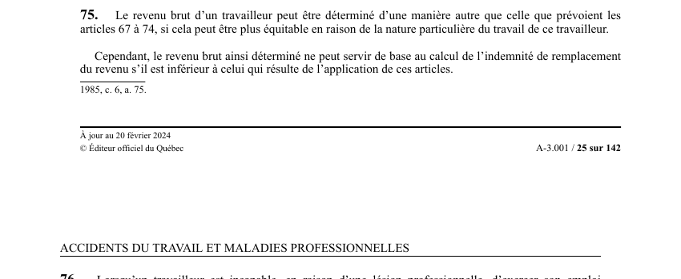

art-75-LATMP : calcul équitable du revenu brut
Soupape d'équité : la Commission peut écarter les règles ordinaires de calcul du revenu brut quand la nature particulière du travail les rend inéquitables, mais le résultat ne peut jamais desservir le travailleur. Visé : CNESST · Nature : faculté encadrée par un plancher.
- Règles pouvant être écartées : art. 67 à art. 74 LATMP.
- Condition d'ouverture : le mode retenu doit être plus équitable en raison de la nature particulière du travail de ce travailleur.
- Plancher protecteur : le revenu ainsi déterminé ne peut servir de base au calcul de l'indemnité de remplacement du revenu s'il est inférieur à celui qui résulte de l'application des art. 67 à 74.
- Effet pratique : le calcul sur mesure ne peut que relever le revenu brut retenu, jamais l'abaisser.
🌐 LegisQuébec · 📄 PDF officiel (page 25)
Texte officiel
Le revenu brut d’un travailleur peut être déterminé d’une manière autre que celle que prévoient les articles 67 à 74, si cela peut être plus équitable en raison de la nature particulière du travail de ce travailleur.
Cependant, le revenu brut ainsi déterminé ne peut servir de base au calcul de l’indemnité de remplacement du revenu s’il est inférieur à celui qui résulte de l’application de ces articles.
Texte de l’article 75 LATMP, extrait de la couche texte du PDF officiel (page 25), sans OCR ni retouche. La capture ci-dessous et le PDF font foi.
{kind=link}

Toucher l'image pour l'agrandir🔗 Ouvrir a cette page : LATMP.pdf : page 25 · texte a jour au 20 février 2024
Voir aussi
- art. 67 LATMP · règle générale de calcul du revenu brut.
- art. 74 LATMP · dernière des règles particulières écartables.
- ↑ Loi : LATMP
Décisions du recueil citant cet article (PDF intégré sur chaque fiche) :
- 📚 Poma CSSS Bordeaux Cartierville Saint- Laurent (2017 QCTAT 796)
Pages qui pointent ici (3)
- art-76-LATMP : revalorisation du revenu après 2 ans d'incapacité Recueil législatif
- Index des décisions : table de travail Recueil législatif
- Poma CSSS Bordeaux Cartierville Saint- Laurent Recueil législatif